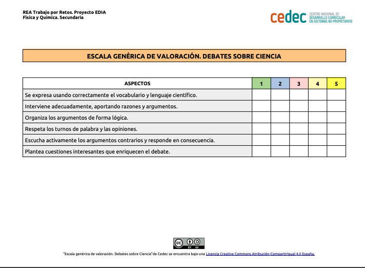
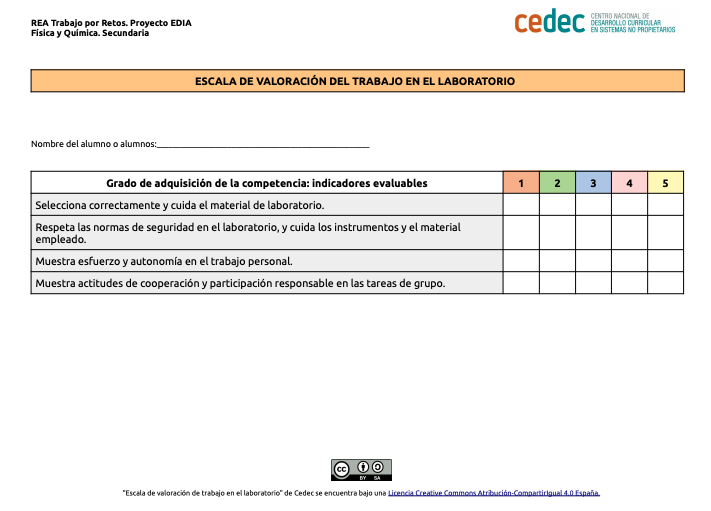

La Conferencia que se celebró en Madrid en 2019 sobre el cambio climático, también conocida como COP25, reunió a representantes de todo el mundo con el fin de encontrar vías para reforzar el cumplimiento del Acuerdo de París. La conferencia coincide con la publicación de datos que muestran que la emergencia climática empeora cada día y tiene efectos negativos sobre las vidas de las personas en todos los rincones del globo, sean olas de calor extremo, polución atmosférica, incendios en los bosques, inundaciones o sequías.

Las consecuencias del cambio climático pueden ser devastadoras si no reducimos las causas del efecto invernadero. De hecho, los impactos del cambio climático ya son perceptibles y quedan puestos en evidencia por datos como:
- La temperatura media mundial ha aumentado ya 1,2 ºC desde la época preindustrial.
- El periodo 2015-2019, según la Organización Meteorológica Mundial (OMM), es probablemente el quinquenio más cálido jamás registrado.
- La tasa de subida del nivel del mar ha ascendido a 5mm al año del 2014 al 2019.
Vamos a investigar el efecto del aumento de la temperatura en los Polos.
Efecto de la temperatura en los Polos
- Duración:
- Dos sesiones
- Agrupamiento:
- Individual, pequeño y gran grupo
Nuestra tarea consiste en realizar una investigación sobre el efecto del aumento de la temperatura en los Polos que presentaremos y debatiremos en el grupo de clase. Finalmente elaboraremos un póster digital con propuestas para reducir el efecto invernadero.

En esta tarea realizaremos tres actividades. Primero vamos a ver un vídeo sobre las características del cambio climático. Es conveniente que vayamos anotando alguna ideas, porque en la actividad final deberemos utilizar esta información, realizamos la actividad individualmente.
Actividad 1: Vídeo interactivo
Actividad 2: Experimentando con la temperatura
Vamos a comprobar experimentalmente a qué temperatura se produce la fusión del hielo. Realizamos la actividad en grupos de cuatro.
Materiales y productos
Preparamos los siguientes materiales y productos:
- Hielo
- Termómetro
- Vaso de precipitados
- Cronómetro
Procedimiento
- Introducimos el hielo en el vaso de precipitados y ponemos el termómetro en contacto.
- Dejamos a temperatura ambiente y vamos midiendo temperatura cada dos minutos y miramos el estado en que se encuentra el agua.
- Antes de realizar el experimento, realizamos nuestra hipótesis.
Observamos y concluimos
Anotamos los resultados y comprobamos nuestra hipótesis.
|
Tiempo
|
Temperatura
|
Hielo
|
Hielo-agua
|
Agua
|
|
00:00 |
||||
¿Qué hemos podido observar?
| ¿A qué temperatura se produce el paso de hielo a agua? |
|
| ¿En este proceso de fusión varia la temperatura? |
|
| ¿Cómo explicaríamos el paso de sólido a líquido aplicando la teoría cinético-molecular? |
|
Actividad 3: Debate
Realizamos un debate sobre el efecto de la temperatura en los Polos.
Preparamos el debate
Antes de realizar el debate en grupos pequeños preparamos el debate, con el siguiente guion:
- Como afecta el aumento de temperatura a los Polos.
- Si se deshacen los Polos como afecta al nivel del mar.
- Como afecta el nivel del mar a los continentes.
- Como afecta el aumento de temperatura en los Polos a los animales terrestres.
- Como afecta el aumento de temperatura en los Polos a los animales acuáticos.
- Como afecta a la actividad humana al aumento de temperatura.
- Nos informamos sobre el calentamiento global.
Realizamos el debate
Realizamos el debate en el grupo grande, con el siguiente guion:
- ¿Qué podríamos hacer para reducir el efecto invernadero?
- ¿Es importante realizar cumbres sobre el clima?
- ¿Crees que es importante llegar a cuerdos a nivel mundial sobre el cambio climático?
Con las conclusiones realizamos un póster digital con propuestas para reducir el efecto invernadero. Para realizar el póster podemos utilizar la aplicación genially o canva
Para elaborar el póster debemos tener en cuenta las siguientes orientaciones:
- Deberá aparecer cómo mínimo el titulo,
- las propuestas para reducir el efecto invernadero e imágenes.
- Podemos enriquecer el póster con direcciones de internet informativas y vídeos.
Evaluación y reflexión
Una vez que hemos finalizado la tarea, es un buen momento para reflexionar en nuestro diario de aprendizaje. Algunas sugerencias pueden ser:
- ¿Qué he aprendido?
- ¿Qué me ha sorprendido más de todo el proceso? ¿Por qué?
- ¿He cambiado alguna idea previa? ¿Cuál?
- ¿Qué me ha resultado más difícil? ¿Por qué?
Evaluación
Para realizar la evaluación utilizaremos las siguientes escalas:
1.-Escala de debates sobre ciencias (descargar en formato editable odt o pdf )

2.-Escala de valoración para trabajo en el laboratorio (descargar en formato editable odt y pdf)
